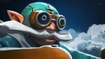

 Gyrocopter 
| Базовые характеристики | Дерево талантов |
| Сила | Ловкость | Интеллект | Скорость передвижения | Поле зрения | Броня | Базовое время атаки | Урон | Замах на атаку | | 22 +2.5 | 26 +3.3 | 21 +2.4 | 315 | 1800/800 | 5.64 | 1.7 | 42 - 48 | 0.2 |
| | Тройной удар Call Down | 25 | Тройной удар Call Down | | +16 к урону за ракету от Rocket Barrage | 20 | +16 к урону за ракету от Rocket Barrage | | +2 к залпам Flak Cannon | 15 | +2 к залпам Flak Cannon | | +200 к здоровью | 10 | +200 к здоровью |
|
| Rocket Barrage | СПОСОБНОСТЬ: Ненаправленная УРОН: магический СКВОЗЬ НЕВОСПР. К МАГИИ: Нет МОЖНО РАЗВЕЯТЬ: Да | Герой обстреливает окружающих врагов ракетами. Длится [3] сек. | Не наносит урона существам, которых не видно. | РАДИУС: 400 РАКЕТ В СЕКУНДУ: 10 УРОН ЗА РАКЕТУ: 6 / 12 / 18 / 24 CAST POINT 0s | Перезарядка: 7.0 / 6.5 / 6.0 / 5.5 Стоймость маны: 75 / 80 / 85 / 90 | | Расширенный отсек для ракет на новом вертолёте Аурела повышает его скорострельность. |
| | Homing Missile | СПОСОБНОСТЬ: Направленная на героя ДЕЙСТВУЕТ: на вражеских Героев УРОН: магический СКВОЗЬ НЕВОСПР. К МАГИИ: Нет МОЖНО РАЗВЕЯТЬ: Сильным развеиванием | Запускает во врага самонаводящуюся ракету. Она постепенно набирает скорость, а при столкновении с целью оглушает её и наносит урон. Враги могут уничтожить ракету, пока она летит к цели. | Башни наносят ракете только половину урона. Метка над жертвой видна только союзникам. Ракета действует и на невидимые цели. | DAMAGE: 90 / 180 / 270 / 360 АТАК ДЛЯ УНИЧТОЖЕНИЯ: 3 АТАК БАШНИ ДЛЯ УНИЧТОЖЕНИЯ: 6 ДЛИТЕЛЬНОСТЬ ОГЛУШЕНИЯ: 1.8 / 2.2 / 2.6 / 3.0 CAST POINT 0s | Перезарядка: 26 / 21 / 16 / 11 Стоймость маны: 120 / 130 / 140 / 150 | | Самый большой снаряд, какой Аурел смог прицепить к своему вертолёту — Бомба™, сочетающая тщательно рассчитанную аэродинамику и взрывчатку, давая на выходе максимальный результат. |
| | Flak Cannon | СПОСОБНОСТЬ: Ненаправленная УРОН: физический СКВОЗЬ НЕВОСПР. К МАГИИ: Да МОЖНО РАЗВЕЯТЬ: Нет | Несколько следующих атак героя сопровождаются залпами по всем врагам в области вокруг него. Эффекты атаки (например, критический урон) действуют только на основную цель. Неиспользованные залпы пропадают через [10] сек. | Дальность атаки по основной цели не изменяется. | РАДИУС: 1000 ЧИСЛО ЗАЛПОВ: 3 / 4 / 5 / 6 ИНТЕРВАЛ АТАКИ ТУРЕЛИ: 1.2 РАДИУС АТАКИ ТУРЕЛИ: 700 CAST POINT 0s | Перезарядка: 18 Стоймость маны: 40 / 50 / 60 / 70 | | Арсенал обновлённого летательного аппарата Аурела позволяет стрелять на все 360 градусов. |
| | Call Down | СПОСОБНОСТЬ: Направленная на точку УРОН: магический СКВОЗЬ НЕВОСПР. К МАГИИ: Нет МОЖНО РАЗВЕЯТЬ: Да | Вызывает воздушный удар на выбранную область. Через 2 сек. туда падает первый снаряд, а через 2 сек. — второй. | Наземная метка, указывающая область действия, видна только союзникам. | УРОН ОТ ПЕРВОГО СНАРЯДА: 150 / 250 / 350 УРОН ОТ ВТОРОГО СНАРЯДА: 200 / 275 / 350 ЗАМЕДЛЕНИЕ ОТ ПЕРВОГО СНАРЯДА: 30.0% ЗАМЕДЛЕНИЕ ОТ ВТОРОГО СНАРЯДА: 60.0% РАДИУС: 600 CAST POINT 0.3s | Перезарядка: 90 / 75 / 60 Стоймость маны: 125 | | «Бомбы пошли!» |
|
↓ История (биография) персонажа ↓
Отслужив всю свою жизнь и побывав во всяческих восстаниях, бунтах, повстанческих нашествиях и революциях, старый вояка Аурел понял, что больше он так не может. Но вдобавок к парочке причиндалов и солидной пенсии бывший инженер удалился на отдых с кое-чем поинтереснее: давно забытый, незавершённый чертёж Gyrocopter, первого пилотируемого не магического летательного аппарата в мире. Обустроившись на заслуженные пенсионные годы в удалённых тропиках Архипелага Эш, где у него было в избытке времени и денег, он решил приступить к работе над машиной.Шли годы, а несработавшие прототипы продолжали скапливаться в огромную кучу - и он начал сомневаться, был ли вообще возможен механический полет. Десятилетие и один день спустя своей отставки, в солнечный вечер, когда дул южный бриз, Аурел сел в своё последнее творение, сверкая негодованием и уже чувствуя надвигающийся провал. Прорычав, он с силой потянул шнур зажигания и прикрыл голову, ожидая неизбежного взрыва. Однако, к его величайшему удивлению, он вдруг начал подниматься, и, после нескольких панических поправок, выравниваться. Спустя час он уже с лёгкостью совершал виражи и следовал за дуновением ветра, летал на одном уровне с чайками, и тогда Аурел ощутил, что наполнен неописуемым восторгом полёта.Когда солнце начало садиться, он направил курс обратно в свою мастерскую, но стоило ему развернуть аппарат, как пушечное ядро пробило его хвост. Высвободившись из сбитого прототипа, он доплыл до ближайшего куска земли, и, собирая обломки, поклялся вновь увидеть корабль, который выпустил то ядро. Дни спустя, когда Аурел вернулся в мастерскую, он приступил к работе над очередным гиролётом— таким, который смог бы переносить более тяжёлый, более опасный груз.